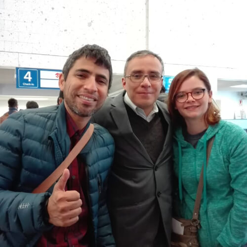

CIENCIA
Creemos en la existencia del método científico como la manera más objetiva de conocer la realidad. Además, creemos que este "método" puede extenderse a otros ámbitos fuera de la Ciencia.
Leer más...SECULARISMO
Creemos en la interpretación racional y naturalista de la realidad. Fomentamos una Ética basada en la Razón lejos de toda interpretación sobrenatural. Rechazamos lo sobrenatural, las Pseudociencias (Astrología, Ufología, Creacionismo, Terraplanismo, etc.) y su difusión.
Leer másLAICISMO
Creemos en la COMPLETA separación entre la "iglesia" y el Estado. Ninguna religión (por mayoritaria que sea) debe ser respaldada, financiada o institucionalizada por ningún Estado. El trato debe ser ESTRICTAMENTE igualitario para todas las formas de creencia y no creencia.
Leer másPROGRESISMO
Somos liberales en lo social, creemos en los derechos sexuales y reproductivos y en que los derechos civiles se extiendan a todas las comunidades sin discriminación en congruencia con nuestro firme humanismo, rechazando el conservadurismo.
Leer más¿Quiénes somos?
La Asociación Peruana de Ateos (APERAT) es una organización sin fines de lucro fundada el año 2009. Como organización la APERAT congrega y brinda espacios de acción y diálogo a la comunidad de no creyentes y humanistas seculares en el Perú. Nos dedicamos principalmente a formular proyectos y actividades en pro de conseguir un Estado laico. Formamos parte de la 'International Humanist and Ethical Union' y de la 'Atheist Alliance International'.
Leer más...¿En qué creemos?
Creemos en la no existencia real de entidades sobrenaturales como cualquier dios o demonio, y en una visión materialista-fisicalista de la realidad. Apostamos en la libertad de pensamiento con el método científico como guía para analizar toda la realidad y en una ética naturalista e independiente de cualquier divinidad, que esté de acuerdo con los derechos humanos y el respeto de los derechos de las minorías.
Leer más...¿Qué queremos?
La APERAT busca propiciar y fomentar puntos de vista racionalistas y científicos. Trabajamos activamente en promover valores éticos basados en la lógica y la razón. También fomentamos y protegemos la libertad de pensamiento y consciencia al mismo tiempo que luchamos por la laicidad del Estado Peruano.
Leer más...Últimos proyectos
La Asociación Peruana de Ateos trabaja activamente en la creación de proyectos en favor de la laicicidad del Estado Peruano.

Defensa legal de ateos
Buscamos defender, de manera efectiva y mediante nuestra área legal, los derechos a la libertad de pensamiento y objeción de conciencia.
Leer más...Exonérate del curso de Religión
Buscamos difundir y defender el derecho que tiene todo padre de familia de exonerar del curso de religión a sus hijos en todos los colegios a nivel nacional.
Leer más...Financiamiento estatal de la Iglesia
Realizamos investigaciones sobre cómo el Estado Peruano subvenciona a la Iglesia Católica gracias al Concordato Perú-Vaticano.
Leer más...Apostasía de la Iglesia
Buscamos difundir y defender el derecho que tiene todo peruano para realizar el procedimiento de apostasía en el Perú.
Leer más...Galería

¿Deseas apoyarnos?
La Asociación Peruana de Ateos trabaja constantemente en la creación de nuevos proyectos en favor de un Estado Laico en el Perú y en la difusión de nuestra cosmovisión a través de eventos, reuniones y conferencias, al mismo tiempo que mantenemos un área legal para la defensa de nuestros derechos.
¡Cualquier apoyo tuyo es importante para nosotros!
direccion
Calle Benjamin Ugarteche 181, Pueblo Libre 15084, Lima
teléfono
+51-997230431
correo:
info@aperat.org